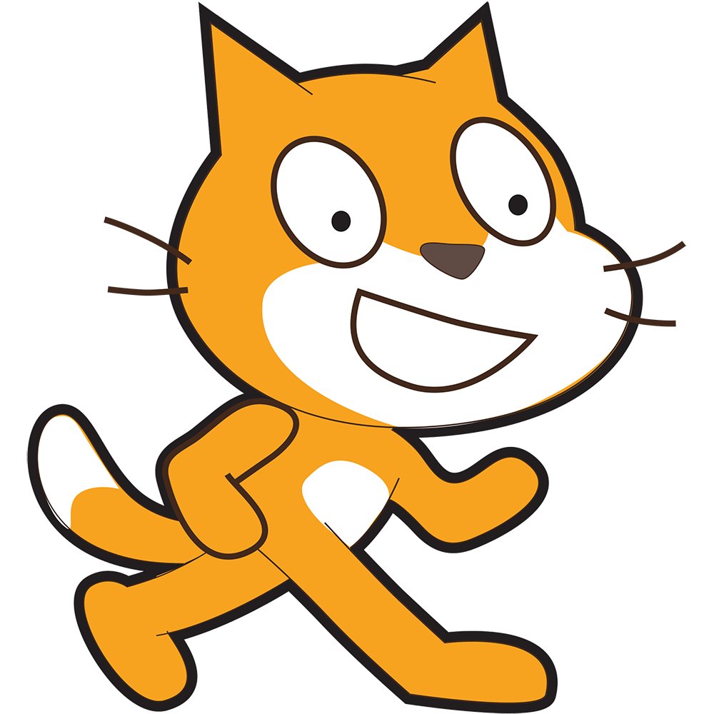

As you can see, this code is written in English. You might be wondering: How could that be? The answer is simple: compilers. The job of compilers is to take source code, instructions written by a programmer for the computer to execute, and convert it into binary.
Common Languages

|
C is a general-purpose programming language which is used for developing operating systems, embedded systems, device drivers, and other applications where high performance and direct hardware are necessary. It is a very effecient program as it has a close relation with machine code and also allows a wide range of features and control over memory management. Finally, it can be adapted to many computer architectures with minimal change. |

|
C# is a general-purpose, object oriented, programming language used for web applications, Windows desktop applications, enterprise software, video games, and mobile apps. It is especially useful for robust backend systems, especially on the Windows platforms. |

| C++ is used for high-performance applications in game development, embedded systems (such as smartwatches and medical devices), computing/simulation softwares, financial applications, machine learning algorithms, and virtual reality. |

| HTML, used to make this website, defines the content layout of a webpage. This can include the layout of headers, paragraphs, links, and much more. HTML does not style the webpage. |

| CSS, also used to make this website, is used to style and layout webpages. It can change font sizes, background colors and images, text decoration, and more. |

| JavaScript is used for web development, mobile apps, games, booking software, interactive maps, and virtual reality. It is a popular coding language due to its versatility, ability to be used on the server and client sides, and is supported by a large community, making it easy to learn. |

| Python is utilized for backend web development, data science, machine learning, automation, scientific computing, and game development. Due to its clear readability and syntax, it is known as a very user-friendly and beginner language. |
|  | Scratch, a visual programming languagge developed by MIT, is a programming program that allows the user to use blocks to "build" code. Unlike most traditional code, Scratch's blocks are easy to use for beginners, and can be accessed on the web. You can find it at https://scratch.mit.edu. |